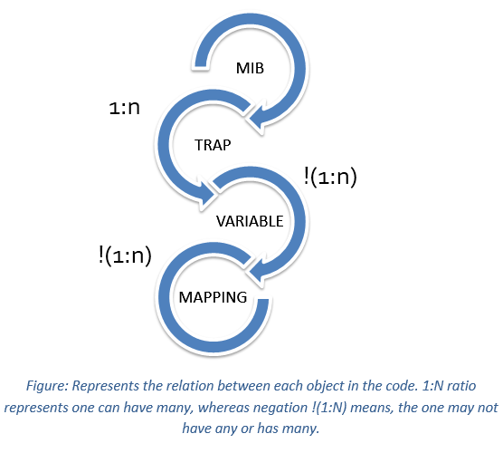
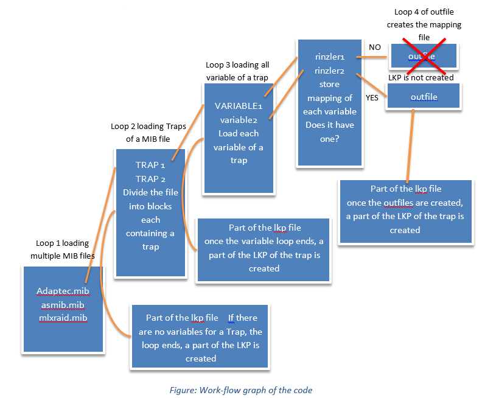
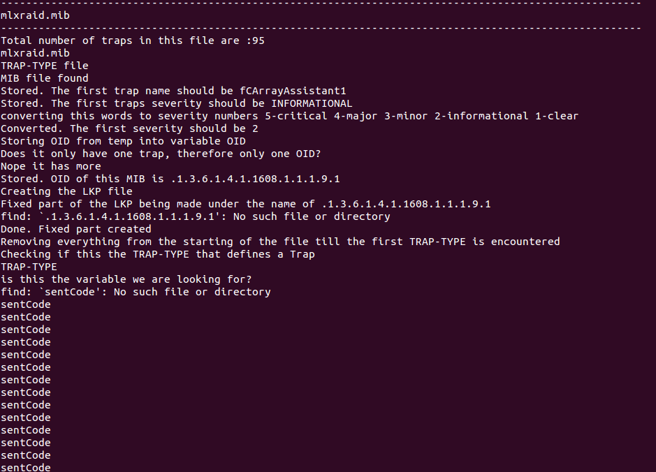

If you are one of those rare people on Earth, who are tasked with configuring new network elements into a telecom network, but don't have access to the bloated up, expensive software, you are in the right place.
What are we doing here?
A telecom carrier uses something called a Fault Management System (FMS). This system monitors the network equipment of any kind of errors/notifications.
The FMS maintains an internal database, where a given error code corresponds to a description of an issue.
For example
sCSISmart4 would display an error on the FMS as
The HostAdapter# %d with HostAdapter Id %s and Manager Id %s is discovered.
When a telecom carrier installs new network equipment in their network they are sent some configuration files from the vendors itself, these configuration files are called MIB (Management Information Base, you didn't expect it to be Men In Back now, or did you?).
These MIB files contain the alarm names(also called TRAP-TYPE) along with some additional stuff and a description of the error/notification.
This MIB files are converted into a particular file format that is used to configure the FMS.
Now the FMS doesn't read MIB files (the why is explained in the next paragraph), it needs to be feed a Lookup File (in short- LKP file), so it has to be converted.
Once the LKP file is loaded, the FMS is now active and can be used to monitor the system live and give constant notifications and error updates to a Network Operations Center.
So what's the big deal? You just have to convert one file to another. Nooo, there is so much more to it!
The multiple complexity explained:

The MIB file will have multiple TRAP-TYPE and those may or maynot have multiple variables in them, and then again those variables may or maynot be required to have a mapping (another file that needs to be created in order to pass variables)
Now, guess what, there are multiple vendors and the MIB file has no fixed format.
For example;
Hewlett Packard defines a error/notification in the MIB file by using TRAP-TYPE whereas Cisco would call this NOTIFICATION-TYPE and this is just the tip of the iceberg.
And the thing about shell scripting is any blank spaces or weird characters like /r (Arises when the MIB file is opened in windows) can break the code.
So I had to create a almost perfect script that would be mindful of the extra spaces and consider all kinds of formats for the MIB file.
This script requires an external .CSV file called mibwithtraps this file list down the the multiple traps contained within a MIB file.
Some example blocks:
mibwithtraps.csv file :
#name of MIB, name of trap, its OID, its severity
adaptec.mib,sCSISmart19,.1.3.6.1.4.1.795.2.5.0.123,CRITICAL,
adaptec.mib,sCSISmart20,.1.3.6.1.4.1.795.2.5.0.124,INFORMATIONAL,
adaptec.mib,sCSISmart21,.1.3.6.1.4.1.795.2.5.0.125,INFORMATIONAL,
asmib.mib,arcServetrapLow,.1.3.6.1.4.1.46.877.0.3,INFORMATIONAL,
asmib.mib,arcServetrap4,.1.3.6.1.4.1.46.877.0.4,CRITICAL,
asmib.mib,arcServetrap5,.1.3.6.1.4.1.46.877.0.5,CRITICAL,
A TRAP-TYPE block :
sCSISmart1 TRAP-TYPE
ENTERPRISE cyclone
DESCRIPTION
"SNMP Agent is up."
--#TYPE "SNMP Agent is up."
--#SUMMARY "SNMP Agent is up"
--#ARGUMENTS {}
--#SEVERITY INFORMATIONAL
--#TIMEINDEX 100
--#STATE OPERATIONAL
--#HELP "scsismrt.hlp"
--#HELPTAG 101
The LKP file for the above block:
FORM: LookupFile
Version: 1
LookupFileCount:21
Case: "101"
{
set(iSeverity=5)
lookup(sTrapResource, "MPS_Node2Res", iMatchMPS)
printf(sResource,"%s:sCSISmart1",sTrapResource)
printf(sMessage,"IP:%s,NodeName:%s, SNMP Agent is up.",sIPadd, sNodeName)
}
So how does the code work?
Well, explaining that is out of the scope of this blog, please refer to the Detailed Technical Analysis attached at the bottom of the page. It explains everything in excruciating detail.
However I am not going to leave you hanging there, this image shows a brief idea of the working of script:
 An example of the code running to show conversion of a mlxraid.mib to a lkp file called .1.3.6.1.4.1.1608.1.1.1.9.1.lkp

The sent code is printed 95 times as the code checks 95 traps, each of whose variables is EventCode, which creates sentcode 95 times.
Some more additional details, more detailed explanation of code (with lots of code snippets!), error handling and limitations have been discussed here Detailed Technical Analysis.
Okay enough, show me the code!
Here you go : code